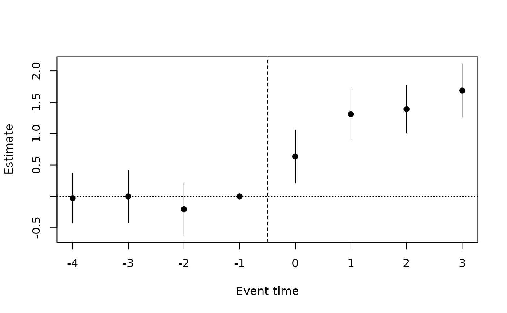

Replaces the single treatment indicator of did() by indicators of event
time e = t - first treated period, from -leads to lags, with
e = ref (by default the period before treatment) as the omitted
reference, in a two-way fixed-effects model. Event times beyond the
window are binned into the end points (bin = TRUE) or dropped from the
sample (bin = FALSE). The lead coefficients estimate differences in
trends before treatment; their joint Wald test is the usual check of
parallel pre-trends (Freyaldenhoven et al. 2019). The lag coefficients
trace the effect over time since treatment.
Usage
eventstudy(
formula,
data,
index,
treat,
leads = 4,
lags = 4,
ref = -1,
bin = TRUE,
family = "gaussian",
vcov = "cluster",
level = 0.95,
...
)Arguments
- formula
outcome and control variables, e.g.
y ~ ageory ~ 1; the treatment indicator is added- data
a data.frame in long format
- index
c(individual, time); the time index must be numeric- treat
name of the column holding each individual's first treated period (in the units of the time index);
NA,0orInffor units that are never treated- leads, lags
number of pre- and post-treatment event times in the window (event times
-leads, ..., lags)- ref
omitted reference event time, default
-1- bin
logical; bin event times outside the window into the end points (
TRUE) or drop those observations (FALSE)- family
"gaussian","poisson","negbin"or"binomial"(conditional logit, logit link only; see Details)- vcov
covariance type, cluster-robust by individual by default
- level
confidence level of the reported intervals
- ...
further arguments passed to
panglm()
Value
an object of class "panglm_eventstudy": a list with fit (the
panglm() fit), estimates (a data frame with event, estimate,
se, lower, upper; the reference row is zero) and pretrend (the
joint test of the leads, from jointtest()) and call (the
eventstudy() call, also stored as the call of fit). Methods: print, summary,
coef, vcov, confint, logLik, nobs, plot, tidy and glance.
Details
Identification of all event-time coefficients needs never-treated units
or a window narrower than the observed event times; without them a
second coefficient is dropped (with a warning). With staggered adoption
and heterogeneous effects the TWFE event-study coefficients are
contaminated by effects from other periods (Sun and Abraham 2021); use a
heterogeneity-robust estimator such as attgt() or etwfe() there.
With family = "binomial" the model is the two-way conditional logit
(see did()) and the event-time coefficients are log odds ratios
relative to the reference event time.
Validation
Numerical accuracy is checked in the package tests and in the validation suite; see the validation article on the package website.
References
Freyaldenhoven, S., Hansen, C. and Shapiro, J. M. (2019). Pre-event trends in the panel event-study design. American Economic Review, 109, 3307-3338. doi:10.1257/aer.20180609
Sun, L. and Abraham, S. (2021). Estimating dynamic treatment effects in event studies with heterogeneous treatment effects. Journal of Econometrics, 225, 175-199. doi:10.1016/j.jeconom.2020.09.006
See also
eventstudy-methods and plot.panglm_eventstudy() for the fitted
model, tidy-methods for tidy() and glance().
Examples
set.seed(1)
d <- expand.grid(id = 1:200, year = 2015:2022)
d$first <- ifelse(d$id <= 100, 2019, NA)
a <- rnorm(200)
e <- d$year - d$first
d$visits <- 3 + a[d$id] + 0.1 * (d$year - 2015) +
ifelse(!is.na(e) & e >= 0, 0.5 + 0.4 * e, 0) + rnorm(nrow(d))
es <- eventstudy(visits ~ 1, data = d, index = c("id", "year"),
treat = "first", leads = 4, lags = 3)
es
#>
#> Event study (two-way fixed effects, gaussian)
#> N = 1600 groups = 200 vcov: cluster
#> Reference event time: -1 (end points binned)
#>
#> event estimate se lower upper
#> -4 -0.0279406 0.2023 -0.4245 0.3686
#> -3 -0.0006271 0.2125 -0.4170 0.4158
#> -2 -0.2058470 0.2117 -0.6209 0.2092
#> -1 0.0000000 0.0000 0.0000 0.0000
#> 0 0.6355992 0.2152 0.2139 1.0573
#> 1 1.3096956 0.2064 0.9051 1.7143
#> 2 1.3908680 0.1949 1.0089 1.7728
#> 3 1.6868941 0.2176 1.2604 2.1134
#>
#> Pre-trend test: Chi-squared = 1.248, df = 3, p-value = 0.7414
plot(es)
